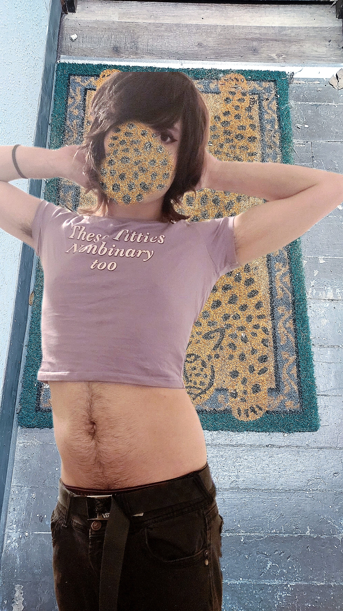

MEET ALEXXXXXXX!!!
Click here to go back

An artist of many names and aliases coming from the fictional United State of Indiana. These aliasas include: Cum on my Cuts, Head Crushing Belt, My Little Pony is Jesus, and many more, the latter of which being probably the most well-known one. Although, it's generally reccomended to just call them Alexxxxxxx (with 7 X's). After a long history of traumas and issues with undiagnosed mental illnesses, Alexxxxxxx now "feels beautiful" and makes music and art for the sole reason as to express themselves.
Contact Alexxxxxxx: nevercuttingangel@gmail.com